Os polígonos regulares são muito usados em mosaicos. Observe:
1. Troque ideias com um colega e escrevam, no caderno, o significado de polígono regular.
Como construir um triângulo equilátero sabendo a medida do lado
Vimos nos anos anteriores como podemos construir um triângulo qualquer
utilizando régua e compasso. Com o passo a passo a seguir, você poderá construir um triângulo equilátero.
- Marque o ponto A (vértice).
- Crie um seguimento
AB
com a medida do lado do polígono.
- Construa uma circunferência de raio
AB
e centro em A.
- Construa uma circunferência de raio
AB
e centro em B.
- Marque o ponto C na
intersecção das circunferências.
- Trace os seguimentos
BC
e
CA.
- O triângulo regular equilátero está pronto.
A construção de um triângulo regular pode ser descrita por meio de um
fluxograma que mostra as etapas de sua construção:
2. Reescreva, em seu caderno, um passo a passo e um fluxograma, criando um algoritmo que
indique a construção de um quadrado.
Observe agora, os seguintes passos fora de ordem, para construir um polígono
regular com compasso:
3. Reescreva, em seu caderno, as frases na ordem correta, criando um algoritmo que
indique uma opção de construção, com régua e compasso, de um hexágono regular.
Os polígonos regulares podem ser inscritos em uma circunferência ou
circunscritos a ela. Observe:
Nos polígonos inscritos em uma circunferência, seus
vértices pertencem à circunferência.
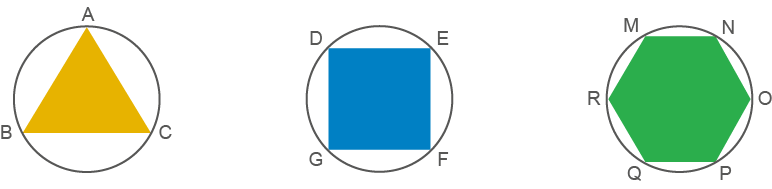
No caso de polígonos circunscritos a uma
circunferência, seus lados são tangentes à circunferência.
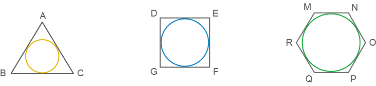
Vamos estudar alguns elementos importantes de
um polígono regular inscrito em uma circunferência.
- O: centro da circunferência e do polígono regular
inscrito nela.
- Apótema (a): segmento que une o centro do polígono
regular ao ponto médio de um dos seus lados. O apótema é sempre perpendicular ao lado.
- Ângulo central (α): ângulo cujo vértice é o centro da
circunferência e os lados passam por dois vértices consecutivos do polígono regular.
Vejamos algumas situações envolvendo polígonos inscritos em uma circunferência.
Situação 1
Calcule a medida do lado e a medida do
apótema de um quadrado inscrito em uma circunferência cujo raio mede 4 cm.
Inicialmente, calculamos a medida do lado do quadrado.
Aplicando o Teorema de Pitágoras no triângulo retângulo OFG, temos:
ℓ
2 = 42 + 42
ℓ2 = 16
+ 16
ℓ2 = 32
ℓ = √32
ℓ =
4√2 cm
Em seguida, calculamos a medida do apótema do quadrado.
A medida do ângulo central do quadrado é igual a
.
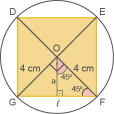
O triângulo OFG é isósceles, pois OF = OG = 4 cm (medida do raio). Assim, seus ângulos medem 45º.
Então:
2a = 2 √2
a = 2√2 cm
O lado do quadrado mede
4√2
cm, e o apótema,
2√2
cm.
Situação 2
Determine a medida do apótema e o
perímetro de um hexágono regular inscrito em uma circunferência cujo raio mede 8 cm.
A medida do ângulo central do hexágono é igual a
O triângulo OED é equilátero, então OD =
OE = ED = 8 cm.
Perímetro: 6 ∙ 8 cm =
48 cm
Então:
2a = 8√3
a = 4√3 cm
O apótema mede
4√3
cm e o perímetro do hexágono, 48 cm.
Situação 3
Um triângulo equilátero, de lado igual a
12 cm, está inscrito em uma circunferência de raio r. Calcule a medida do raio da
circunferência circunscrita a esse triângulo e a medida do apótema.
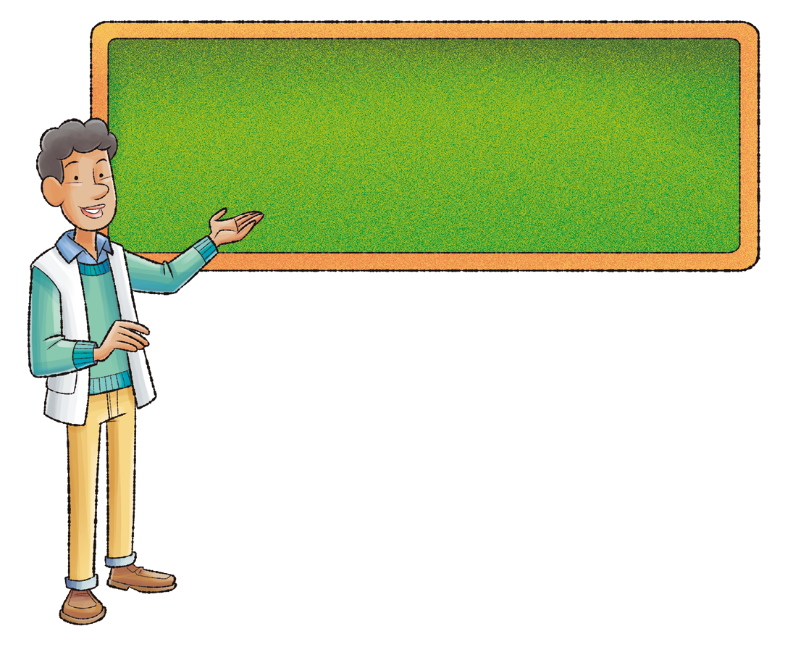
A medida do ângulo central do triângulo equilátero é igual a
O triângulo OBC é isósceles, então OC = OB
= r.
Determinando a medida do raio:
√3.r = 12
r = 4√3 cm
Determinando a medida do apótema:
3a = 6√3
a = 2√3
Assim, o raio da circunferência circunscrita mede
4√3 cm
, e a medida do apótema,
2√3
cm.
1. O lado de um quadrado inscrito em uma circunferência mede 10 cm. Calcule a
medida do raio da circunferência circunscrita a esse quadrado e a medida do seu apótema.
2. A medida do apótema de um quadrado inscrito em uma circunferência é
√2
cm. Determine a medida do lado desse quadrado.
3. Determine a área de um quadrado inscrito em uma circunferência de apótema
igual a 8 cm.
4. O lado de um hexágono regular inscrito em uma circunferência de raio r mede 12 cm. Determine a medida do raio da circunferência circunscrita e do
apótema desse hexágono.
5. Determine o perímetro de um hexágono regular inscrito em uma circunferência
cujo apótema mede
6√2
cm.
6. Dado um hexágono regular de 30 cm de lado inscrito em uma circunferência de
raio r, calcule:
a) a medida do raio da circunferência circunscrita a esse
hexágono;
b) a medida do apótema desse hexágono;
c) a medida do raio da circunferência inscrita a esse
hexágono.
7. O lado de um triângulo equilátero mede 24 cm. Calcule a medida do raio da
circunferência circunscrita a esse triângulo.
8. Dado um triângulo equilátero de 18 cm de lado, calcule:
a) a medida do raio da circunferência circunscrita a esse
triângulo;
b) a medida do apótema desse triângulo;
c) a medida do raio da circunferência inscrita nesse
triângulo.
9. Um hexágono regular e um quadrado estão inscritos em uma
mesma circunferência. Calcule a medida do apótema do hexágono, sabendo que o apótema do quadrado mede
8√2 cm.
10. O lado de um triângulo equilátero inscrito em uma circunferência mede
10√3 cm.
Calcule a medida do lado de um hexágono inscrito nessa mesma circunferência.
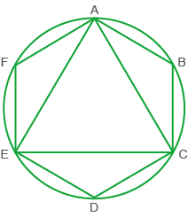
11. Em uma circunferência estão inscritos um quadrado e um triângulo equilátero.
Sabendo que a diagonal do quadrado mede
6√2
, calcule a medida do apótema do triângulo equilátero.
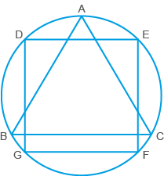
12. Na figura a seguir, a diagonal do quadrado inscrito no círculo mede 12 cm.
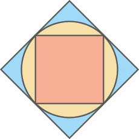
Nessas condições, determine:
a) a medida do raio do círculo;
b) a medida do lado do quadrado inscrito ao círculo;
c) a medida do lado do quadrado circunscrito ao círculo;
d) a medida da diagonal do quadrado circunscrito ao círculo.
13. A figura abaixo representa a vista superior de uma caixa, que acomoda 12
cilindros.
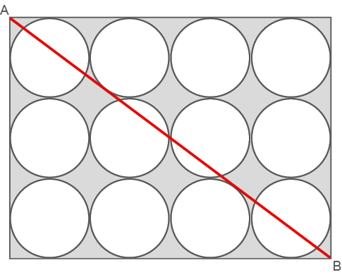
Sabendo que a base dos cilindros tem 0,5 dm de raio, determine
a medida do segmento
AB
.
14. Determine o perímetro de um quadrado inscrito em uma circunferência de 9 cm de
raio.
15. (ETF-RJ) Numa circunferência, inscreve-se um triângulo equilátero, cujo lado
mede
10√3 m
. Em seguida, no interior do triângulo, constrói-se outro triângulo, também equilátero, cujos lados
ficam afastados 1 m dos lados do primeiro. O apótema do triângulo menor mede:
a) 4 m
b) 2√3 m
c) 3√2 m
d) 5√3 m
16. (OBMEP) Na figura, O é o centro do círculo e AB =
5 cm. Qual é o diâmetro desse círculo?
a) 4 cm
b) 5 cm
c) 8 cm
d) 10 cm
e) 12 cm
Probabilidade e estatística
- Análise de gráficos divulgados pela mídia
Observe o gráfico a seguir, ele foi apresentado em inglês, por um jornal
britânico e traz informações sobre 8 países emergentes. As barras em azul escuro representam as reservas
internacionais do país e em azul claro, a necessidade de um financiamento externo, ambas em bilhões de
dólares.
1. Observando o gráfico, está claro qual país tem maior reserva internacional?
2. Comparando visualmente, qual país necessita de investimento externo, Brasil ou Chile?
3. Na sua opinião, o gráfico utilizado influencia na interpretação dos dados?
4. Refaçam o gráfico, por meio de um software de planilha eletrônica, utilizando os mesmos dados de forma
proporcional entre os países. Em seguida, determine a média e a mediana dos dados apresentados na
necessidade de um financiamento externo.
1. (UFRN) Na figura, o comprimento da corda
CD
é:
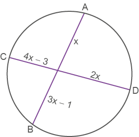
a) 2
b) 3
c) 4
d) 7
2. (UFPA) O raio de uma circunferência onde se inscreve um
triângulo equilátero de 3 cm de lado é:
a) 1
b)
√3
c)
d)
3. (PUC-SP) Na circunferência da figura de centro O e
raio igual a 9 m, sabe-se que a tangente PB = 2 ∙ PA. A distância do ponto P à
circunferência é:
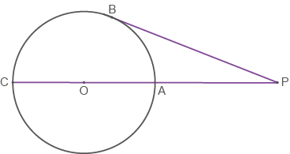
a) 12 m
b) 24 m
c) 6 m
d) 3 m
e) n.d.a.
4. (Mackenzie-SP) Na figura, AB = 7 m, AD
= 6 m e DE = 4 m. Então, BC é
igual a:
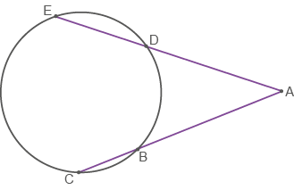
a) 5 m
b) 11 m
c) 12 m
d) n.d.a.
5. (FESP-SP) Numa circunferência de raio r estão inscritos um quadrado e um hexágono regular. A razão entre as
medidas dos lados do hexágono e do quadrado é:
a)
b)
c)
d)
e)
6. Na circunferência, de centro O, está inscrito o triângulo equilátero ABC.
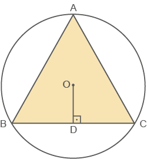
Sabendo que OD = 3 cm,
determine a medida do diâmetro da circunferência.
7. Um triângulo equilátero e um hexágono regular estão inscritos em uma mesma
circunferência, de centro O. Determine a medida do lado do
hexágono.
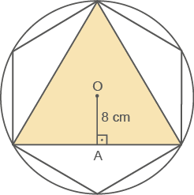
8. Observe o quadrado inscrito em uma circunferência:
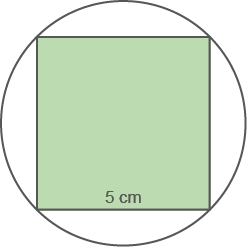
Determine a medida do raio dessa circunferência.
9. (UFBA) Na figura a seguir, são dados:
, BE = 8 cm e ED = 6 cm. O
comprimento de
AC
, em cm, é:
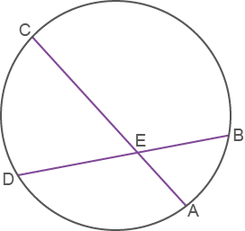
a) 10
b) 12
c) 16
d) 18
e) 20